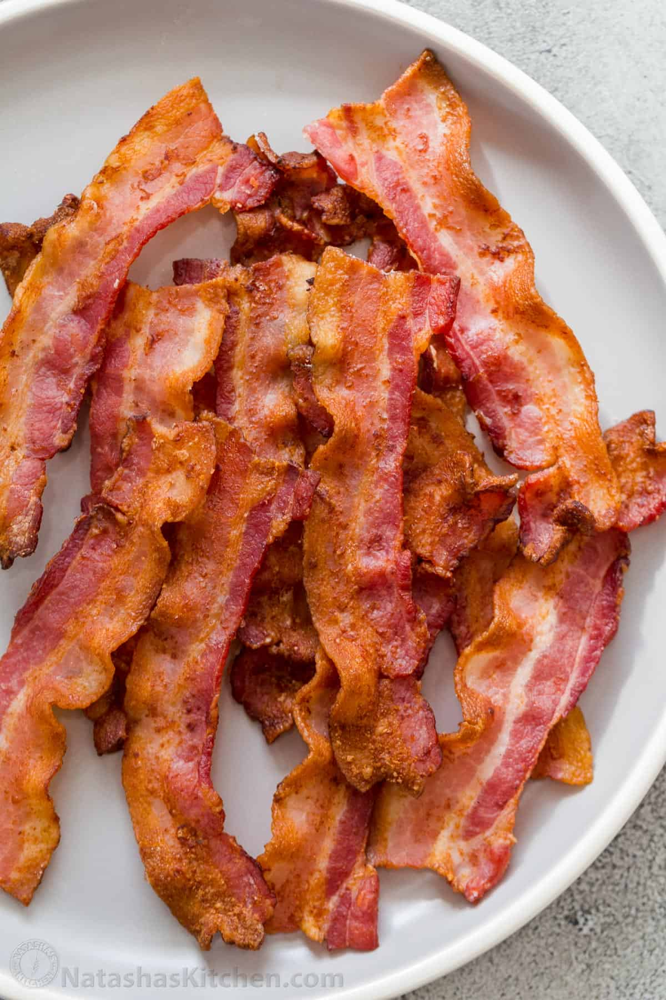

Bacon

What we need
- 5 slices of bacon, or how much you wish
Instruction
- Place the bacon strips in a single layer in the air fryer basket. Cut strips in half if needed to fit more.
- Air fry regular cut bacon at 350˚F for 7-9 minutes, or until bacon is browned and reaches desired crispiness. Air fry thick-cut bacon for 10-12 minutes.
- Transfer bacon to a paper towel-lined plate then serve. If cooking bacon in batches, be sure to discard any oil in the drip pan before repeating the process.